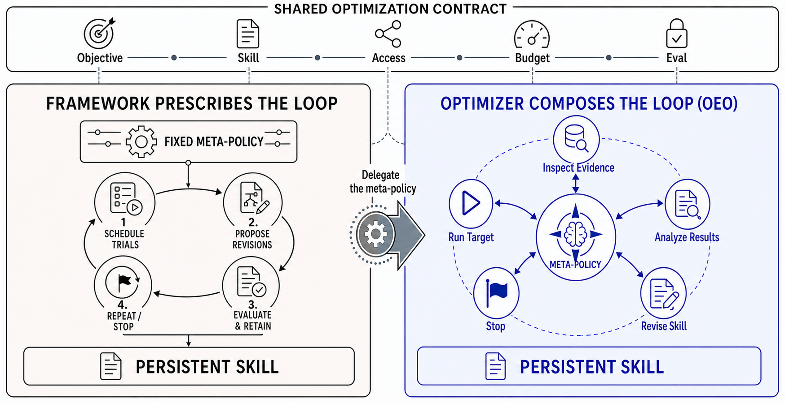
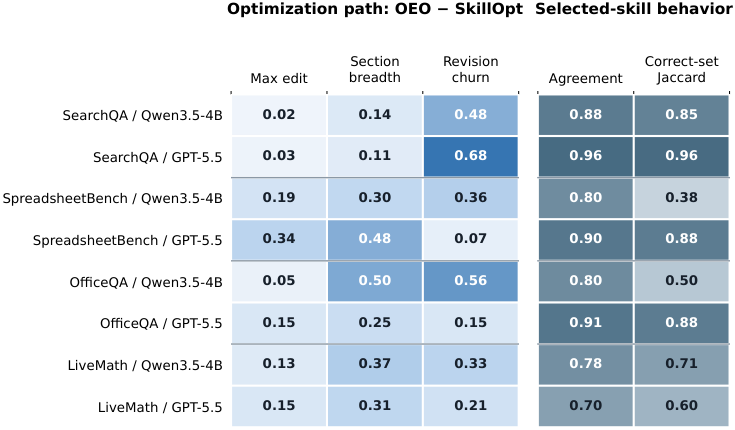

Rethinking Self-Evolving Agents: Do We Still Need Prescribed Optimization Pipelines? (OEO)
TL;DR
- OEO — Open-Ended Optimization (Hui Xue & Fan Yang, Microsoft Research, arXiv 2608.09629) asks what most self-evolving-agent papers assume away: if the optimizer is a frontier model, must we still prescribe the improvement pipeline (analyze failures → propose edit → validate → iterate), or can we hand the model a fixed contract — objective, budget, data boundaries, sealed eval — and let it compose the process online?
- With GPT-5.5 as optimizer, contract-only OEO beats the prescribed pipelines: 7 wins / 1 tie vs. SkillOpt across 8 benchmark–target settings and 5 wins in 6 confirmatory GEPA comparisons (GEPA's only lead: 0.21 points), while using a median 34.3% of SkillOpt's target-interaction token budget.
- The finding is explicitly capability-dependent: with a medium optimizer (Qwen3.5-27B) the prescribed SkillOpt pipeline wins back the lead (+9.68 on LiveMath, +3.50 on SearchQA), and a weak optimizer (Qwen3.5-4B) can't produce valid actions at all under OEO's interface — prescribed pipelines are "capability-dependent scaffolding," not universal best practice.
Why this matters
Every skill-evolution system in this tracker — SkillOpt-style loops, GEPA, curriculum-skill methods — hard-codes a meta-policy: the sequence of "inspect failures, rewrite, validate, revert" steps a human designed. That prescription was load-bearing when optimizer models were weak. But it is also a ceiling: a fixed pipeline can't decide that this particular benchmark needs more exploration before editing, or that the current skill should be rolled back two checkpoints, or that it's time to stop spending budget. The self-improvement literature has been quietly asking "how do we design better improvement loops?" — this paper asks "who should design the loop?" and answers: it depends on who's running it, measured cleanly.
The clean part is what earns the tutorial slot. Instead of another framework claiming wins, OEO holds the external contract fixed across all methods — same initial skill, budget, data boundaries, sealed final split — and varies only where procedural control lives, which turns delegation into an experimental variable instead of a design philosophy. For a reading list centered on recursive self-improvement, this is the governance question in miniature: how much process do you fix, as a function of capability?
The core idea
Skill optimization is usually written as a pipeline. OEO writes it as an agent loop over optimization states. The object being improved is a skill — a text document the target model reads before it works — and the optimizer is itself an agent whose environment is the optimization run: the skill as it currently stands, everything observed so far, the versions committed along the way, and the budget still unspent. Each turn it emits exactly one permitted operation: Inspect (look at permitted data or earlier results), RunTarget (spend budget rolling out the target with the current skill), Revise (commit a new version), Select (nominate a committed version as the answer), Stop. A runner checks that each action is legal, bills it to the right meter, and keeps the final test split locked. That is the whole system — no prescribed ordering, no fixed iteration count, no mandated failure analysis.
The vocabulary is the useful export, because it is the split that makes any of this measurable. The optimization contract is what the framework fixes from outside and enforces: objective, starting skill, target model, which data may inform choices, which operations are legal, the budget, a frozen evaluator, and a final split opened once. The optimization meta-policy is the task-specific logic that decides how evidence is gathered, how failures are diagnosed, how the skill is rewritten, which candidate is kept, and when to stop. Almost no prior work separates the two, so almost none can treat delegation as an experimental variable. OEO holds the contract identical across every method it compares and varies only where the meta-policy lives — in a pipeline a human wrote, or in the optimizer's own head.

Figure 1 from the paper: both designs share the same external optimization contract (objective, budget, permissions, sealed evaluation). A prescribed pipeline fixes the task-specific improvement process in advance; OEO lets a frontier optimizer compose that process online.
The two contrast systems are chosen for opposite search biases. SkillOpt is pipeline-centric: fixed rollout and reflection batches, separated success/failure diagnosis, bounded patch operators, only validation-improving candidates committed. GEPA is search-centric: free-form trace-conditioned mutation inside a framework-defined Pareto loop that owns parent selection, cadence, retention, and termination. The two agree with each other on almost nothing except the contract — they share neither edit language nor search topology — so a result that holds against both is not a result about one pipeline's idiosyncrasies.
How it works
The loop in one sentence. Every turn the optimizer looks at where it stands and picks one of five moves — inspect data, run the target, rewrite the skill, nominate a saved version as its answer, or stop — while a runner checks the move is legal, bills it to the right budget, and keeps the final test set locked; nothing tells it what order to move in.
One optimization run, start to finish
The setting is the cell where the loop's own contribution is easiest to see: LiveMath (124 sealed items), target model Qwen3.5-4B, optimizer GPT-5.5. Every method starts from the same skill document, which scores 0.3065. SkillOpt, driving its prescribed pipeline with the same optimizer, finishes at 0.6129. A control that receives the same starting information and is allowed exactly one rewrite, with no loop at all, finishes at 0.2742 — worse than doing nothing. The open-ended run finishes at 0.6532.
(The turn-by-turn sequence below is one legal path under Algorithm 1, written to show which moves exist and who orders them; the paper reports aggregate path statistics, not transcripts — verify against the appendix.)
Step 1 — Accept the contract, which is not a recipe. The run opens with the optimizer holding the objective, the exact starting skill (byte-identical to the one the pipelines get), the identity of the model the skill is for, which split it may consult while making choices, which operations are legal, and how much it may spend. What it is not handed is a procedure. Nothing says "first analyze failures, then patch, then validate." Every boundary the framework owns is a condition; none of them is a route.
Step 2 — Pick the first move from a menu of five.
| Move | What it does | What it spends |
|---|---|---|
| Inspect | read permitted data or earlier results | optimizer tokens |
| RunTarget | roll the target out on tasks with the current skill | target-interaction budget |
| Revise | commit a new version of the skill | optimizer tokens |
| Select | nominate one committed version as the run's output | — |
| Stop | end the run | — |
A cheap opening is Inspect: read a few permitted LiveMath items and see what the starting skill actually instructs the target to do. Nothing forces that. The same optimizer could roll out first to get a failure profile, or rewrite the skill sight-unseen. Which it does, and when, is the object of study.
Step 3 — Decide, every time, whether the next question is worth a rollout. RunTarget is the only move that spends the resource everyone is measured in. A prescribed pipeline spends it on a schedule fixed in advance — this many rollouts per stage, this many reflection batches — whether or not the answers are still informative. Here the decision is remade at every turn, and that is where the savings come from: over the four OfficeQA and LiveMath runs, GEPA burns roughly 100% of its allocation every time, while the open-ended runs use 19.7%–59.4% and score higher.
Step 4 — Rewrite, and keep the old version. Revise commits a new skill and pushes the previous one onto a checkpoint list that stays addressable. Reversal is therefore cheap: an edit that turned out badly is undone by nominating an earlier checkpoint, not by trying to edit back toward it. The measured paths show the optimizer using that room — larger single edits, more of the document touched at once, and more editing that never survives into the final text than the pipeline produces, in all eight paired runs.
Step 5 — Stop with budget left over. When further rollouts stop changing its mind, the optimizer ends the run itself. Nothing obliges it to exhaust the allocation, and it never does: realized target-interaction spend stays under the reference in all eight settings, down to 6.1% on GPT-5.5-target SpreadsheetBench, where it still matches SkillOpt's score.
Step 6 — Hand over one checkpoint; the seal breaks once. The run returns the nominated checkpoint, or the current skill if it never nominated one. Only then is the sealed split opened and scored — once, by the benchmark's frozen evaluator. Here that is 0.6532, against 0.3065 for the skill it started from, 0.6129 for the prescribed pipeline, and 0.2742 for the one-shot control. The last of those is what kills the cheap explanation: a frontier model that could simply write a better skill from priors would not need the loop, and without it here it lands below the skill it was handed.
The machinery behind steps 1–6
Step 1, the contract item by item. This is exactly the list the paper refuses to delegate: the objective; the initial skill \(s_0\), byte-identical across methods; the target model \(M_{\mathrm{tgt}}\); the permitted selection data \(D_{\mathrm{sel}}\) — the split (usually valid_seen) that may guide candidate or checkpoint choice; the permitted operation set \(\mathcal{O}\); the budget \(B\); a frozen evaluator; and the sealed final split \(D_{\mathrm{final}}\) (valid_unseen or test), touched once, after selection. Within a benchmark–target pair, dataset snapshot, split, target endpoint, and initial skill are pinned too.
Step 2, what a turn actually is. The optimizer model \(M_{\mathrm{opt}}\) reads an optimization state and emits one action:
Symbol by symbol: \(t\) indexes turns. \(z_t\) is the optimization state at turn \(t\), made of \(s_t\), the skill as currently written; \(H_t\), every observation accumulated so far; \(K_t\), the list of committed checkpoints; and \(b_t\), the resources still unspent. \(a_t\) is the single action emitted that turn. \(\mu^{(q)}\) is the meta-policy of procedure \(q\) — the thing under comparison, with \(q\) ranging over OEO, SkillOpt, and GEPA. \(\mathcal{C}\) is the contract from Step 1, identical for every \(q\). \(\mathcal{I}_q\) is procedure \(q\)'s action interface: how state, history, and budget are shown to whatever is choosing, and the syntax an action must be written in. \(\mathcal{A}_q(\mathcal{O})\) is procedure \(q\)'s representation of the shared permitted-operation set \(\mathcal{O}\). Read across the three procedures, \(\mathcal{C}\) and \(\mathcal{O}\) are constants while \(\mu\), \(\mathcal{I}\), and \(\mathcal{A}\) are the variables — the whole experiment in one line.
Table 1 spells out what varies, on seven control dimensions:
| Control dimension | SkillOpt | GEPA | OEO |
|---|---|---|---|
| External contract | shared objective, initial skill, target, permitted data/operations, budget, selection-data boundary, sealed final split | same | same |
| Evidence scheduling | fixed rollout and reflection batches | parent and minibatch selection | optimizer-directed |
| Diagnosis | success/failure decomposition | trace-conditioned reflection | optimizer-directed |
| Revision space | bounded patch operators | free-form textual mutation | optimizer-selected edit or rewrite |
| Candidate retention | strict improvement gate; rejected-edit memory | Pareto-aware pool update | optimizer selects among committed states |
| Schedule and stopping | fixed stages and epochs | budgeted evolutionary loop | adaptive within the budget |
| Returned skill | validation-selected best | validation-selected candidate | optimizer-selected committed state |
Row 1 is held constant; rows 2–7 are the independent variable.
Step 3, how spend is metered. Optimizer-side and target-interaction tokens are counted on separate meters, with SkillOpt's configured allocations as the common reference for both. Realized target-interaction spend runs 6.1%–59.4% of that reference, median 34.3% — OEO was never given less budget, it chose to stop early. The nuance worth carrying is that the frugality is specific to target interaction: on the optimizer side OEO slightly exceeds SkillOpt's configured allocation in 3 settings and reaches 98.9% in a fourth. It is a frontier model thinking harder in order to roll out less, which is the right trade only when rollouts are the expensive resource. Model calls are also atomic, so a call that starts inside budget can overshoot on completion; the paper therefore reports sealed performance and realized spend side by side instead of claiming exact cost matching.
Step 4, measuring the path rather than the artifact. For each OEO–SkillOpt pair the authors reconstruct every byte-distinct committed state in order and compute three metrics: the maximum normalized token edit between adjacent states, the maximum section breadth (fraction of Markdown heading paths whose bodies change or are added or removed), and edit churn
where \(\operatorname{Lev}\) is token-level Levenshtein distance, \(s_0\) the initial skill, \(s_T\) the last committed skill, and each \(s_{t-1}\to s_t\) a successive committed pair. The numerator is how far the text travelled net; the denominator is how far it travelled in total; so churn is the fraction of stepwise editing that does not survive into the terminal state — near 0 for a run that only ever accumulates, near 1 for a run that writes and rewrites the same sections. The \(\max(\cdot,1)\) only guards against a zero denominator when nothing was committed.
Step 6, what the runner refuses to delegate. The sealed split is unreachable at every turn, and all methods are scored by one evaluation on it under the benchmark's frozen evaluator. GEPA is aligned into the same contract rather than run natively: it evolves only the common persistent skill, starts from the byte-identical artifact, has optional merging disabled, and returns one validation-selected candidate, so it competes on the same object. Two controls then isolate the variable: the static-input-matched one-shot control from the walkthrough, which gets everything OEO knows at turn zero but has tool access disabled (Table 3, enumerated below), and the frozen-protocol capability ladder, which swaps only the optimizer model while freezing both protocols, prompts, endpoint, data, seed, and interface.
Benchmarks: SearchQA (sealed \(n\)=1,400), SpreadsheetBench (280), OfficeQA (172), LiveMath (124); targets Qwen3.5-4B and GPT-5.5; GPT-5.5 supplies all optimizer-side calls in the frontier comparison.
Where the loop stops working
Delegation is not free-standing — it is a bet on the optimizer, and the paper prices the bet. Freeze both protocols and swap GPT-5.5 for Qwen3.5-27B and the ranking inverts: the prescribed pipeline wins by +9.68 on LiveMath and +3.50 on SearchQA. Swap in Qwen3.5-4B and the open interface produces no valid executable action at all, so no rollout ever happens, while the pipeline's runner completes the run by supplying the control sequence externally. The loop above describes a capability regime, not a universal design.
Two of the headline cells also carry an asterisk. The head-to-head tally is 14 comparisons — 8 against SkillOpt, 6 against GEPA — even though Table 2 prints eight GEPA entries. The two SpreadsheetBench GEPA cells (0.2214†, 0.4964†) are post-hoc checkpoints matched to OEO's realized target-interaction spend rather than GEPA's native full-budget selection, so they are descriptive and excluded from the confirmatory counts. Absolute gains also stay small where the task is hard: SpreadsheetBench with the 4B target moves only 0.2107 → 0.2464.
Algorithm 1 ("Contract-enforced Open-Ended Optimization") is the whole protocol:
Algorithm 1 (from the paper, lightly compressed):
Input: contract C with initial skill s0, budget B, sealed split D_final;
optimizer M_opt
s <- s0; history H <- {}; checkpoints K <- [s0]; selected s_hat <- none
while budget admits another optimizer step:
a_t <- M_opt(s, H, K, remaining(B); C)
validate a_t against permitted interface + remaining resources
if a_t = Revise(s'): s <- s'; append s to K; record commit in H
elif a_t = Select(j): s_hat <- K[j]; record selection in H
elif a_t = Stop: break
else: execute Inspect or RunTarget; append observation to H
update optimizer- and target-model resource counters
return s_hat if selected else s; evaluate ONCE on sealed D_final
Results
Frontier optimizer (Table 2, sealed-split scores). OEO: 7 wins, 1 tie vs. SkillOpt across 8 settings; 5 wins vs. GEPA in 6 confirmatory settings, the single GEPA lead being 0.21 points. Sample row — SearchQA with Qwen3.5-4B as target: initial 0.6693 → SkillOpt 0.7221, GEPA 0.7507, OEO 0.7514. Margins are heterogeneous: against SkillOpt they run from a dead tie on GPT-5.5-target SpreadsheetBench (both 0.7607) to +18.55 on GPT-5.5-target LiveMath; against GEPA, from 0.21 on SearchQA to +28.23 on that same cell. GEPA beats SkillOpt in 3 of its 6 confirmatory cells, so the second comparator is no strawman. From the shared initial skill, OEO improves all 8 settings, SkillOpt 7 (it regresses on Qwen-target SpreadsheetBench, 0.2107 → 0.1964), GEPA 5 of 6.
Two of those cells don't count: the tally of 14 is 8 SkillOpt plus 6 GEPA, because the two daggered SpreadsheetBench GEPA entries (0.2214†, 0.4964†) are the spend-matched post-hoc checkpoints flagged under Where the loop stops working, not confirmatory comparisons. Read the daggers before quoting the grid.
Selective spend, not cheap spend. On SearchQA, OEO and GEPA use the same fraction of the target-interaction reference and land within 0.21 of each other. Across OfficeQA and LiveMath, GEPA runs to roughly 100% in all four runs while OEO uses 19.7%–59.4% and scores higher; on GPT-5.5-target LiveMath it produces the largest gap of the paper on 33.0% of the allocation, and on GPT-5.5-target SpreadsheetBench it matches SkillOpt on 6.1%.
The one-shot control (Table 3). The zero-interaction rewrite gets the byte-identical initial skill and the same static step-0 information OEO sees — benchmark and target identity, task and interface spec, objective, budget fields, evaluator and output requirements, tool-availability description — then has tool access disabled: it cannot inspect examples, execute the target, observe trajectories or scores, or revise twice. On SearchQA the prior genuinely helps (0.6693 → 0.6900, 0.7857 → 0.8357) yet still trails OEO by 6.14 and 3.57. On LiveMath it hurts — 0.3065 → 0.2742 and 0.3871 → 0.3468 — while OEO gains 34.68 and 29.84. (Two item-level timeouts count as failures in the GPT-5.5 LiveMath cell; scoring both correct lifts it to 0.3629, still 32.26 behind.) That rules out the cheapest deflationary story: the gains aren't priors leaking through a single rewrite, they need the loop.
Capability ladder (Table 4, frozen protocols, target Qwen3.5-4B). The crossover the tweet led with, and the paper's most important table:
| Optimizer | LiveMath OEO | LiveMath SkillOpt | SearchQA OEO | SearchQA SkillOpt |
|---|---|---|---|---|
| Weak (Qwen3.5-4B) | blocked | 0.5565 | blocked | 0.6579 |
| Medium (Qwen3.5-27B) | 0.4919 | 0.5887 | 0.6807 | 0.7157 |
| Frontier (GPT-5.5) | 0.6532 | 0.6129 | 0.7514 | 0.7221 |
"Blocked" means the weak optimizer never emitted a valid executable action, so no target rollout occurred; invalid actions are not repaired and count as operational failures, while SkillOpt's runner completes both weak runs by supplying the control sequence externally. That is the mechanism behind "scaffolding" — the pipeline does the sequencing the model can't. Executability isn't sufficiency, though: weak-optimizer SkillOpt on SearchQA (0.6579) lands below the shared initial skill (0.6693). Weak and medium OEO caps match the realized frontier-OEO budgets, so the ladder isn't confounded by spend. Medium→frontier lifts OEO by 16.13 (LiveMath) and 7.07 (SearchQA) versus 2.42 and 0.64 for SkillOpt — delegated composition is far more capability-sensitive than pipeline execution.
Path analysis (Figure 3, Table 5). Prescription changes the optimization path far more consistently than the selected skill's evaluated behavior — and it is not a "fewer, larger updates" story: OEO makes more committed updates in 5 settings, the same in 1, fewer in 2. But all three path metrics point the same way in all 8 paired runs: larger maximum edit, broader section breadth, higher churn. Meanwhile pass/fail agreement is ≥0.78 in 7 of 8 settings (range 0.7016–0.9629) and correct-set Jaccard exceeds 0.70 in 5 (range 0.3778–0.9581). On SearchQA/GPT-5.5 the two selected skills agree on 96.29% of sealed items with \(J_C=0.9581\); on the SpreadsheetBench tie, agreement is 0.9000 with \(J_C=0.8767\) — not just the same leaderboard number, largely the same instances. The exceptions cut both ways: OfficeQA/Qwen has near-identical totals but \(J_C\) of only 0.5000, so similar scores can hide complementary correct sets. Across the 8 settings final-text distance and behavioral distance correlate at only \(\rho=0.3095\) (Spearman, descriptive) — the diff you're reading is weak evidence about the behavior you're getting.

Figure 3 from the paper: OEO-minus-SkillOpt committed-path metrics are all positive (OEO explores/edits differently), yet pass/fail agreement and correct-set Jaccard \(J_C\) between the final selected skills remain high.
How it connects
This is the meta-level companion to the skill-evolution cluster here: SkillHone, SkillRise, HiSME, and MSCE all are prescribed pipelines in OEO's taxonomy — each a "SkillOpt cell" in this grid. The capability crossover gives the cluster a reading key: those pipelines earn their complexity exactly when the optimizer is mid-tier, which is where most open-weight self-improvement actually runs. It rhymes with AI4AI's strong-to-weak scaffolding (scaffolding as a function of capability gap) and with Mendel-style RSI entries, where the safety argument depends on contract enforcement of the kind OEO's runner implements — sealed evals, budget meters, permitted-action validation. The 34.3%-budget result echoes AutoDesign's finding that a strong optimizer's advantage is knowing where not to spend rollouts, and the process-vs-function split is the skill-level analogue of what Meta-Harness shows at the harness level. "Who designs the loop" is the skill-level version of what DarwinX and HarnessCompass ask of harnesses — expect a follow-up that delegates harness evolution under the same contract framing.
Critical take
Two authors, two benchmarks in the capability ladder, and "GPT-5.5 supplies all optimizer-side calls via the GitHub Copilot Responses API" — a careful small study, not a sweeping result. Three worries. First, prescription strength is confounded with prompt engineering: OEO's interface \(\mathcal{I}_q\) still encodes choices about how state, history, and budget are presented, and a differently-worded one could shift the weak-optimizer "blocked" result; the paper tests one interface and explicitly does not repair invalid actions — defensible, but the harshest possible reading of weak-optimizer capability. Second, the prescribed baselines are two specific systems. "Prescribed pipelines lose at the frontier" really means "these two lose"; a pipeline co-designed for GPT-5.5 might not, and aligned-GEPA (merging disabled, single artifact) is a narrowed version of its native self. Third, n is small for several cells (124 on LiveMath, 172 on OfficeQA, 280 on SpreadsheetBench) while scores are reported to four decimals, and each is one completed run — no seeds, no variance bars, on benchmarks where a handful of items moves a point. Treat sub-point margins as noise. The deeper open question: OEO's advantage partly comes from stopping early — is that judgment, or is GPT-5.5's prior just well-matched to these benchmarks' improvement ceilings? A benchmark where persistence pays would disambiguate. (Inference from the reported design — verify against the appendix protocols.)
If you remember three things
- Fix the contract, delegate the process: objective, initial skill, target, permitted data and operations, budget, selection-data boundary, and sealed final split stay external and runner-enforced; how to improve — inspect, roll out, revise, roll back, stop — can be left to a frontier optimizer, which wins 12 of 14 head-to-head cells on a third of the target-interaction budget.
- Prescribed pipelines are capability-dependent scaffolding: medium optimizers do better with the pipeline (+9.68 LiveMath, +3.50 SearchQA), weak ones can't operate the open interface at all, frontier ones are throttled by it. And executability alone bought the weak optimizer a score below the initial skill.
- Paths diverge, behavior converges: prescription reliably changes how the skill evolves (churn, edit breadth) but far less what it does — final-text and behavioral distance correlate at only \(\rho=0.3095\) — so the pipeline you're hand-tuning may be shaping the journey, not the destination.